Module Purpose
This source content presents Judaism as a living monotheistic tradition shaped by covenant, sacred memory, text, worship, family practice, holy time, and peoplehood. The chapter shows that Jewish identity is carried through study, ritual, ethics, and community continuity rather than through belief in isolation.
The goal is to understand how the chapter's main themes connect. Judaism is best studied as a lived tradition where Abraham, Moses, Torah, Sabbath, mitzvot, symbols, diaspora, and Canadian Jewish life all reinforce one another.
Learning Outcomes
- Explain how Judaism combines monotheism, covenant, sacred memory, and community responsibility.
- Describe the roles of Abraham, Moses, the Exodus, and Sinai in Jewish identity and liberation memory.
- Differentiate Torah, Tanakh, and Talmud and explain why study and interpretation matter in Judaism.
- Identify how synagogue life, rabbis, Sabbath, and mitzvot connect belief with lived practice.
- Explain how kosher practice, holy days, and ritual objects make ordinary life, memory, and sacred time visible.
- Describe diaspora, anti-Semitism, and Holocaust memory with accurate, respectful language.
- Connect Judaism in Canada to pluralism, contribution, challenge, and community continuity.
- Use reliable sources to research a Jewish symbol, holy day, institution, or community and produce a basic bibliography.
Chapter Sections
- Judaism: Covenant, Memory, and Community
- Covenant and the Ancestral Story
- Moses, Exodus, and Liberation
- Torah, Tanakh, and Talmud
- Synagogue, Rabbi, and Community Life
- Sabbath: Making Time Holy
- Kosher Practice and Everyday Holiness
- Holy Days and Ritual Memory
- Symbols, Ritual Objects, and Sacred Space
- Diaspora, Anti-Semitism, and Persistence
- Judaism in Canada
- Researching Judaism Responsibly
- Chapter 6 Glossary
Chapter 6 Core Ideas
| Idea | Meaning |
|---|---|
| Covenant | Judaism frames identity through sacred relationship, promise, law, and responsibility rather than private belief alone. |
| Memory | Stories such as Abraham and the Exodus are kept alive through ritual, family life, worship, and annual holy days. |
| Text and study | Torah, Tanakh, and Talmud show that Jewish life is shaped by sacred teaching, interpretation, and disciplined learning. |
| Sacred time | Shabbat and holy days turn weekly and annual time into a pattern of worship, rest, repentance, and remembrance. |
| Mitzvot and daily practice | Kosher discipline and other commandments connect ordinary choices to holiness, identity, and ethics. |
| Symbols and sacred space | Objects such as the Torah scroll, menorah, tallit, and Western Wall communicate belonging, reverence, and continuity. |
| Diaspora and persistence | Jewish communities have preserved identity across many lands while also facing anti-Semitism and persecution. |
| Canadian pluralism | Judaism remains a living part of Canadian society through worship, education, charity, memory work, and civic participation. |
1. Judaism: Covenant, Memory, and Community
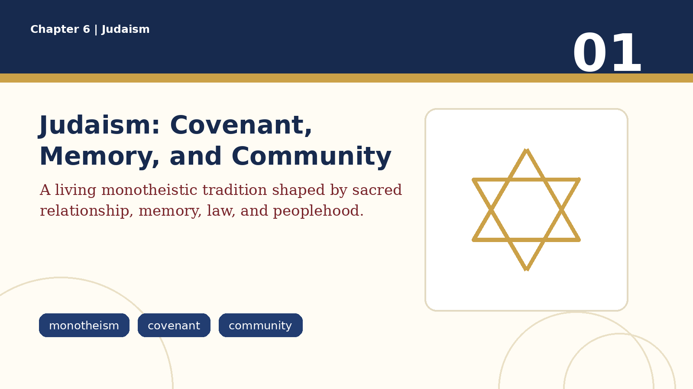
Judaism is one of the world's oldest living monotheistic religions. It teaches that there is one God and that human life should be shaped by relationship with God, ethical responsibility, sacred memory, and community. In Judaism, religion is not only a private belief system. It is lived through worship, study, food practices, holy days, family rituals, moral choices, and the organization of weekly time.
A central idea in Judaism is that God enters into covenant with humanity and, especially in Jewish tradition, with the people of Israel. Covenant means a sacred bond of promise and responsibility. Because of this, Judaism connects belief with action: what a person does matters. Keeping sacred time, studying Torah, practicing justice, caring for others, and remembering the past are all ways Jewish identity is lived.
Judaism is also diverse. Jewish communities have lived in many countries, languages, and cultures. Some Jews are highly observant, while others identify more culturally, ethnically, historically, or communally. Serious study avoids treating all Jews as identical. What unites Judaism across difference is the importance of memory, text, covenant, ethical action, and community continuity.
2. Covenant and the Ancestral Story
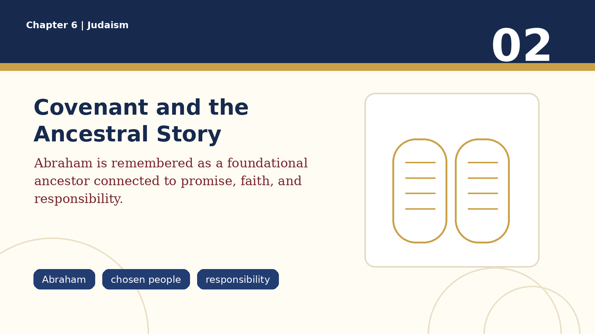
In Jewish tradition, Abraham is remembered as a key ancestor and an early figure of covenant. His story connects Jewish identity to faith in one God, trust, promise, land, descendants, and responsibility. Abraham is significant not simply because he appears in an ancient story, but because his covenant with God becomes a foundation for Jewish self-understanding.
The language of being a 'chosen people' is best understood as covenant responsibility, not as a claim of racial superiority. Jewish tradition presents the covenant as a calling to live in a way that witnesses to God, justice, holiness, and faithfulness. The covenant gives identity, but it also creates obligations.
Covenant is visible in memory and practice. Circumcision is traditionally understood as a sign of the covenant connected to Abraham. Sacred stories, rituals, blessings, family life, and study all help pass this covenant identity from one generation to the next.
3. Moses, Exodus, and Liberation
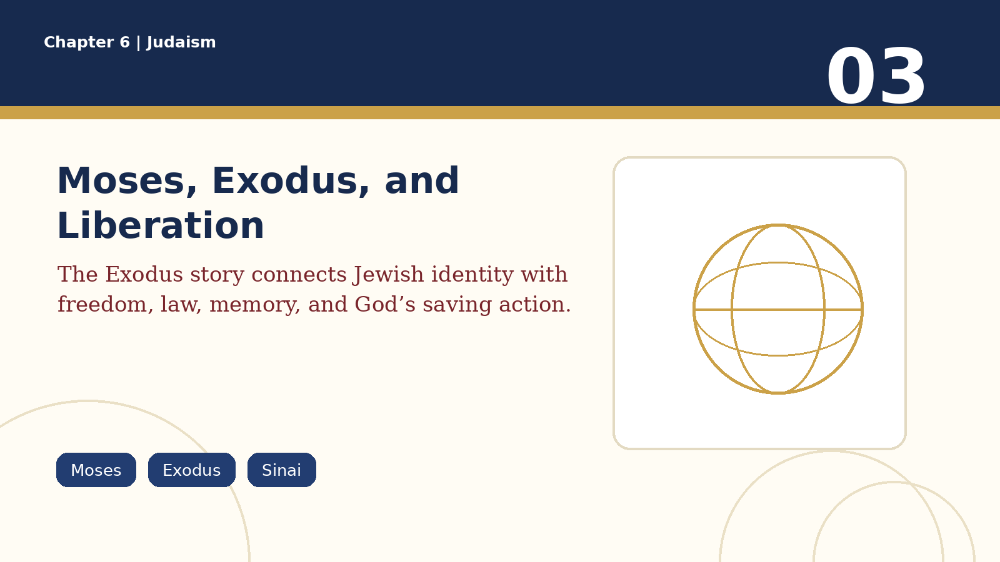
Moses is one of the most important figures in Jewish tradition. He is remembered as the leader through whom God brings the Israelites out of slavery in Egypt. This event is called the Exodus, meaning a going out or departure. The Exodus is not only an ancient escape story; it is a central memory of liberation, oppression, trust, and identity.
After the Exodus, Moses is associated with the receiving of the law at Sinai, including the Ten Commandments. This connects freedom with responsibility. Jewish tradition does not present liberation as permission to live without moral direction. Instead, freedom is joined to covenant, teaching, and ethical obligation.
The Exodus remains central because it is retold repeatedly in Jewish worship and family life, especially during Passover. Remembering the Exodus teaches that identity is preserved through story. It also communicates that God hears suffering, that oppression is morally serious, and that each generation has a responsibility to remember and act.
4. Torah, Tanakh, and Talmud
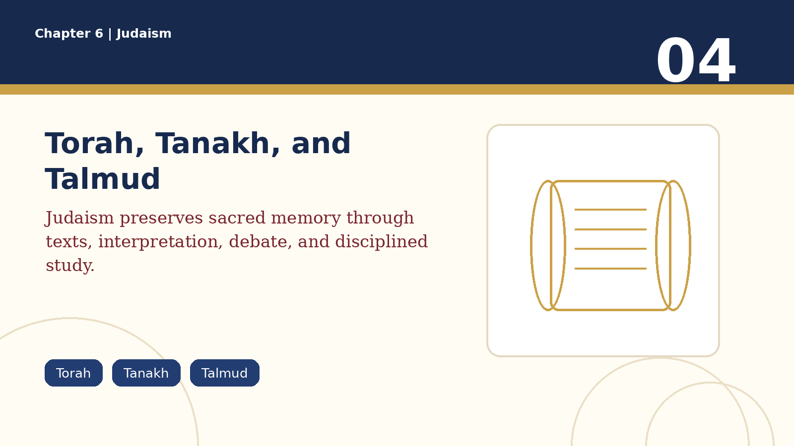
The Torah is the central sacred teaching of Judaism. It is often associated with the Five Books of Moses and includes stories, commandments, laws, and teachings that shape Jewish worship, ethics, memory, and identity. The word Torah is often translated as law, but 'teaching' or 'instruction' gives a fuller sense of its role.
The Tanakh is the Hebrew Bible as a whole. It includes the Torah, the Prophets, and the Writings. The Tanakh preserves foundational stories, poetry, law, prophecy, wisdom, and historical memory. It is not only read for information; it is studied as sacred tradition.
The Talmud is a major body of rabbinic discussion and interpretation. It explores how Jewish law and teaching should be understood and lived in changing situations. The Talmud shows that Judaism values study, argument, commentary, and careful reasoning. Sacred tradition is not treated as flat or simple; it is interpreted through generations of learning.
5. Synagogue, Rabbi, and Community Life
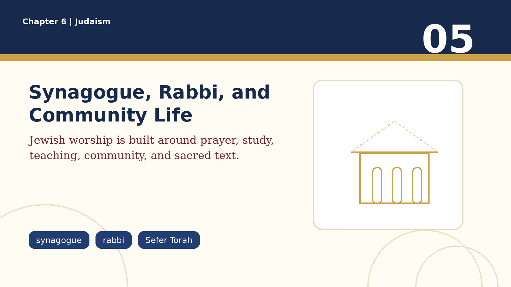
A synagogue is a Jewish place of worship, study, teaching, and community gathering. Synagogues became especially important after the destruction of the ancient temples in Jerusalem because Jewish life needed places where communities could pray, study Torah, and preserve identity outside the Temple system.
A synagogue usually contains a Holy Ark that houses the Torah scrolls. The Sefer Torah, a handwritten Torah scroll, is treated with great reverence because it represents the sacred teaching at the centre of Jewish life. Worship is often communal, and in many traditions a minyan, a quorum of Jewish adults, is required for certain prayers.
A rabbi is generally a teacher, scholar, spiritual leader, and guide for the community. A rabbi does not replace God or function exactly like a priest in some other religions. The rabbi's role is to teach, interpret tradition, support community life, answer religious questions, and help people connect Jewish learning with daily practice.
6. Sabbath: Making Time Holy
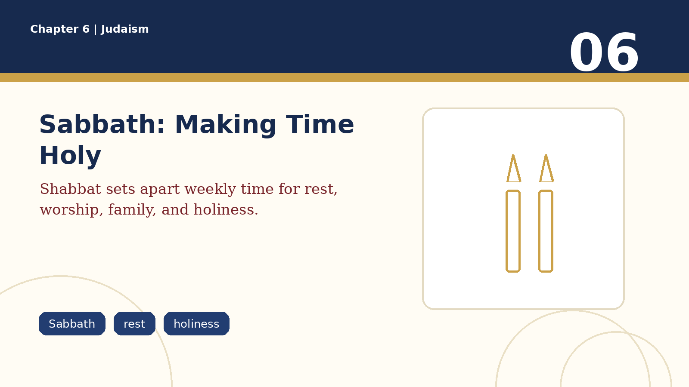
The Sabbath, or Shabbat, is the weekly holy day of rest in Judaism. It begins at sunset on Friday and continues until Saturday night. Sabbath observance is rooted in the idea that time itself can be made sacred. It reminds people that life is not only work, production, and busyness.
Sabbath practices vary among Jewish communities and families. They may include lighting candles, sharing meals, reciting blessings such as kiddush over wine, attending synagogue, reading or studying Torah, resting from ordinary work, and spending time with family. More observant Jews may follow detailed rules about activities avoided on Shabbat.
Sabbath matters because it gives Jewish life a weekly rhythm of holiness. It connects creation, covenant, family, worship, and identity. It also teaches a powerful ethical idea: human beings need rest, and no one should be reduced to endless labour.
7. Kosher Practice and Everyday Holiness
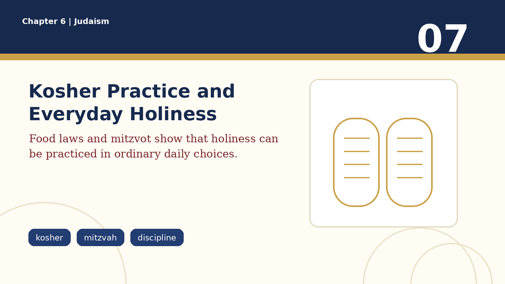
Kosher practice is connected to Jewish dietary law, often called kashrut. Food that fulfills these requirements is described as kosher. The details of kosher practice can include which animals may be eaten, how food is prepared, and how certain foods are separated. Not all Jews keep kosher in the same way, but the practice remains an important expression of Jewish identity for many communities.
Kosher eating communicates that ordinary actions can become spiritually meaningful. Eating is not treated as morally neutral or disconnected from faith. Through discipline, attention, and habit, daily life becomes connected to holiness, identity, and obedience.
A mitzvah is a commandment, and in common speech it can also refer to a good deed. Mitzvot shape Jewish action by connecting belief with responsibility. Examples include keeping Sabbath, giving charity, honouring parents, practicing justice, caring for the vulnerable, studying Torah, or observing dietary laws. The point is not only to believe the right things, but to live faithfully.
8. Holy Days and Ritual Memory
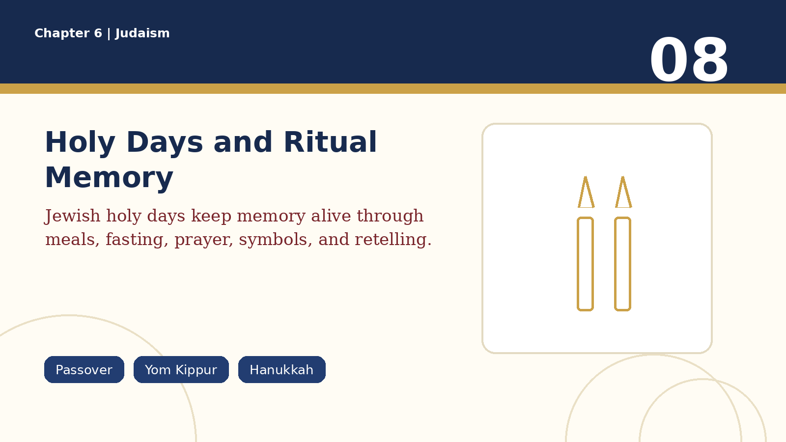
Passover, or Pesach, remembers the Exodus from Egypt. Its central home ritual is the seder, a ceremonial meal in which the story of liberation is retold. The Haggadah guides the retelling. Passover teaches that memory is not passive; each generation is invited to see itself as connected to the movement from slavery to freedom.
Yom Kippur is the Day of Atonement and is usually treated as the most solemn holy day of the Jewish year. It is associated with repentance, fasting, confession, prayer, forgiveness, and moral repair. Its mood is serious because it asks people to examine their lives and seek reconciliation with God and others.
Hanukkah is an eight-day festival of lights connected to rededication and historical memory. It is different in mood from Yom Kippur. Hanukkah emphasizes light, perseverance, dedication, and identity, while Yom Kippur emphasizes repentance and atonement. Both show how holy days carry Jewish memory across generations.
9. Symbols, Ritual Objects, and Sacred Space
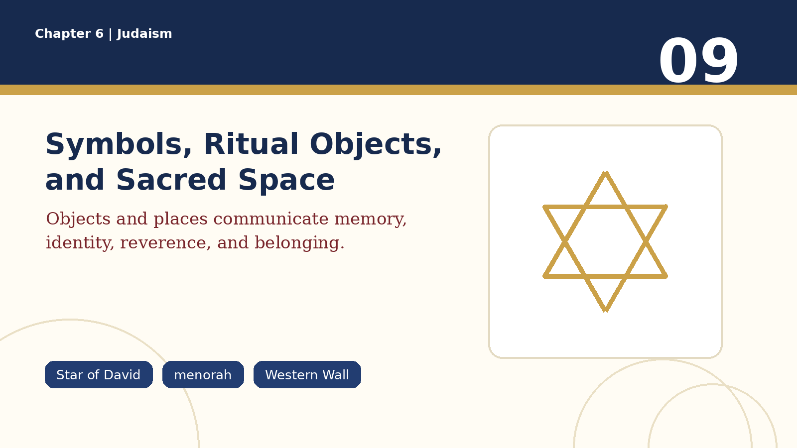
Jewish symbols and ritual objects are not just decorations. They communicate beliefs, memories, and values. The Star of David is widely recognized as a Jewish and Israeli symbol. The menorah is a seven-branched candelabrum associated with Jewish tradition, while the Hanukkiah is the special nine-branched lamp used during Hanukkah.
Several ritual objects are connected to prayer and identity. A kippah or yarmulke is a small head covering worn by many Jewish men and by some Jewish women, depending on community and practice. A tallit is a prayer shawl. Tefillin are small leather boxes containing biblical texts, worn by some Jewish men during weekday morning prayer. A shofar is a ram's horn blown during certain holy days, especially around the Jewish New Year period.
Sacred space also matters. The Western Wall in Jerusalem is a remaining part of the ancient Temple complex and is a place of prayer and memory. In synagogues, the Holy Ark and Torah scrolls show that sacred text stands at the centre of communal worship.
10. Diaspora, Anti-Semitism, and Persistence
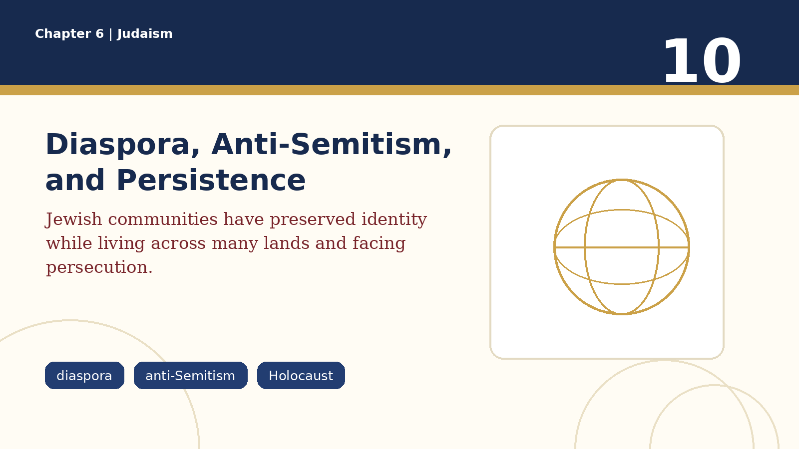
Diaspora means the dispersal of Jewish communities outside the land of Israel. Jewish communities have lived for centuries across the Middle East, Europe, North Africa, Asia, and the Americas. Diaspora shaped Judaism by requiring communities to preserve identity through text, ritual, family life, synagogue worship, law, education, and memory while adapting to many different societies.
Diaspora history includes creativity, resilience, scholarship, trade, culture, and community building. It also includes persecution. Anti-Semitism means hostility or prejudice against Jews. It has appeared in religious, racial, political, and social forms. Because of this history, Jewish identity has often been shaped by both belonging and vulnerability.
The Holocaust was the Nazi genocide of six million Jews during the Second World War. It must be studied with seriousness and respect, not as a casual example. Holocaust memory has shaped Jewish communities, human rights education, anti-racism work, and Canadian conversations about justice, citizenship, and responsibility.
11. Judaism in Canada
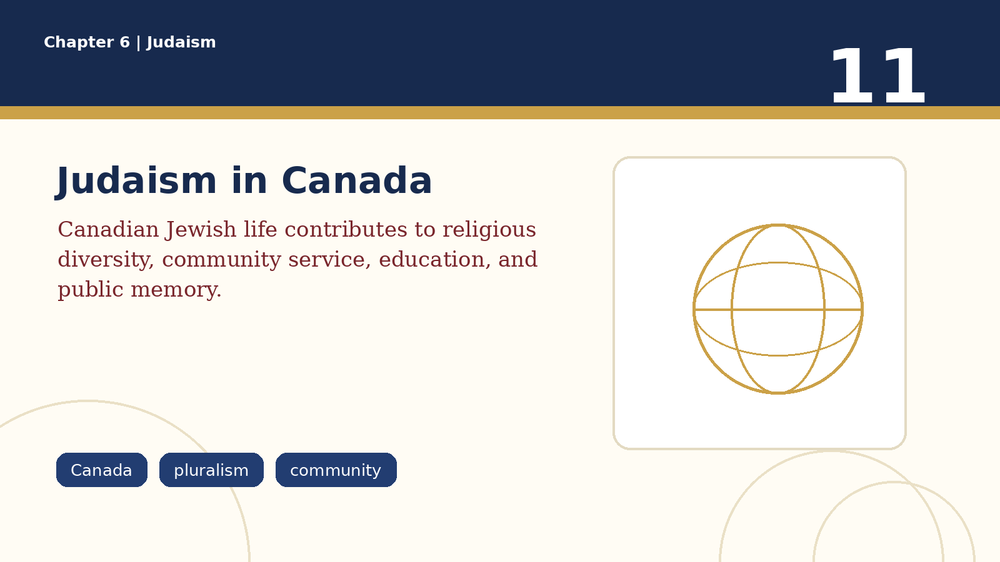
Jewish life in Canada shows that Judaism is not only an ancient tradition but also a living part of Canadian society. Canadian Jewish communities include synagogues, schools, community centres, charities, cultural organizations, archives, museums, scholars, artists, business leaders, activists, and public servants.
Judaism contributes to Canadian religious diversity by making visible a tradition centred on covenant, sacred text, ritual memory, family life, education, and ethical responsibility. Jewish institutions often support both Jewish community life and broader civic life through charity, social services, education, and cultural programming.
Canadian Jewish history also includes difficult realities such as immigration restrictions, anti-Semitism, and Holocaust remembrance. Studying Jewish life in Canada should include both contribution and challenge. A strong answer does not reduce Judaism to victimhood, and it also does not ignore prejudice. It shows how communities preserve identity while participating in a pluralistic society.
12. Researching Judaism Responsibly
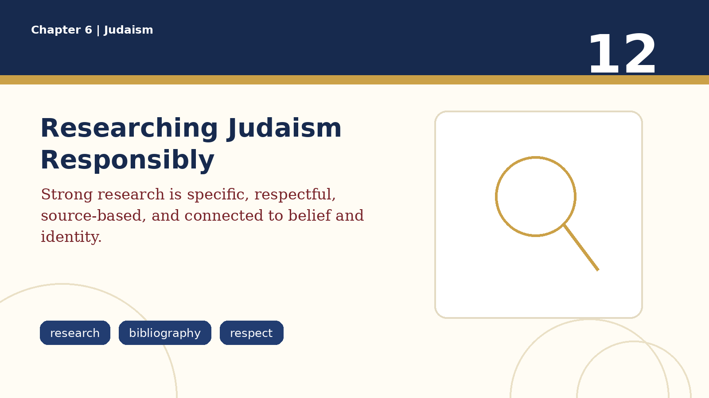
When researching a Jewish holy day, symbol, ritual object, community, institution, museum, neighbourhood, or historical event, choose a specific example. Do not write only about 'Judaism' in general. Strong topics include Passover, Yom Kippur, Hanukkah, the shofar, the tallit, the Torah scroll, the Western Wall, a synagogue, a Jewish museum, a Holocaust education centre, a Jewish community organization, or a Canadian Jewish historical event.
A strong research response has four parts. First, identify the example clearly. Second, describe it with enough detail that a reader understands what it is. Third, explain what beliefs, memories, values, or practices it communicates. Fourth, explain how it connects Jewish identity across generations or contributes to Canadian society and pluralism.
Use reliable sources. Good choices include museum sites, synagogue or Jewish community organization pages, library databases, reputable encyclopedias, academic sources, and educational resources from recognized institutions. Avoid relying on unsourced blogs, random social media posts, stereotypes, or AI-generated text without verification. A bibliography should include at least the author or organization, title, website or publisher, date if available, URL if used, and access date if required by your teacher.
Chapter 6 Glossary
| Term | Meaning |
|---|---|
| Abraham | A foundational ancestor in Jewish tradition associated with covenant, faith, promise, and Jewish identity. |
| Anti-Semitism | Hostility, prejudice, or discrimination directed against Jews. |
| Covenant | A sacred, binding relationship of promise and responsibility between God and humanity or God and Israel. |
| Diaspora | The dispersal of Jewish communities outside the land of Israel. |
| Exodus | The liberation story in which Moses leads the Israelites out of slavery in Egypt. |
| Haggadah | The text used during the Passover seder to guide the retelling of the Exodus. |
| Hanukkah | An eight-day festival of lights connected to rededication and Jewish historical memory. |
| Holocaust | The Nazi genocide of six million Jews during the Second World War. |
| Kippah / Yarmulke | A small head covering worn by many Jews as a sign of reverence and identity. |
| Kosher / Kashrut | Jewish dietary practice and the food-law system connected to holiness and discipline. |
| Menorah | A seven-branched candelabrum associated with Jewish tradition; a Hanukkiah is used for Hanukkah. |
| Minyan | A quorum required for certain communal prayers in many Jewish traditions. |
| Mitzvah / Mitzvot | A commandment; in common speech, also a good deed or faithful action. |
| Moses | The leader associated with the Exodus, Sinai, and the giving of the law. |
| Passover / Pesach | A spring festival that remembers the Exodus from Egypt. |
| Rabbi | A Jewish teacher, scholar, spiritual leader, and guide for a community. |
| Sabbath / Shabbat | The weekly holy day of rest from Friday sunset to Saturday night. |
| Seder | The ceremonial Passover meal and service in which the Exodus is retold. |
| Sefer Torah | A handwritten Torah scroll, treated as a highly sacred object in Jewish worship. |
| Shofar | A ram's horn used in Jewish religious ceremonies, especially around the New Year period. |
| Star of David | A widely recognized Jewish symbol made of two interlaced triangles. |
| Synagogue | A Jewish place of worship, study, teaching, and community gathering. |
| Tallit | A Jewish prayer shawl. |
| Talmud | A major body of rabbinic discussion and interpretation of Jewish law and tradition. |
| Tanakh | The Hebrew Bible: Torah, Prophets, and Writings. |
| Tefillin | Small leather boxes containing biblical texts, worn by some Jews during weekday morning prayer. |
| Torah | The central Jewish teaching or instruction, especially the Five Books of Moses. |
| Western Wall | A sacred prayer site in Jerusalem connected to the ancient Temple complex. |
| Yom Kippur | The Day of Atonement, a solemn holy day of repentance, fasting, and prayer. |
| Zionism | A movement connected to Jewish national self-determination in the land of Israel. |
Research Quality Checklist
- Choose one specific topic rather than writing about Judaism in general.
- Describe the holy day, symbol, object, community, institution, or event accurately.
- Explain the beliefs, memories, values, or practices the example communicates.
- Show how the example connects Jewish identity across generations or contributes to Canadian pluralism.
- Use at least two reliable sources and include a complete bibliography.